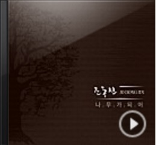

한주간의 국내 음반 중 음악적으로 주목 할 만한 음반들을 선정하여 소개합니다.
매주 발매되는 국내 앨범들 중, 주목할 만한 앨범들을 "이 주의 발견 - 국내" 코너를 통해 소개합니다. 전문가들이 직접 추천하는 다양하고 새로운 국내 음악들을 지금 바로 만나보세요!
글 / 이경준(음악평론가), 최지호(음악취향Y 필진)

그 누구도 원망할 새 없이 세월은 흘러갔다. 작가 조동진의 가사를 빌리자면 "날이 저물고, 달이 기우는 것도 잊을 만큼" 무상한 시절이었다. 다섯 번째 앨범이 1996년 나왔으니, 꼬박 20년이 걸린 셈이다. 그의 표정만큼이나 과묵하고 고요했던 시간의 강이었다. 그의 여섯 번째 솔로 음반 [나무가 되어]도 크게 다르지 않다. 여전히 듬직하고, 여전히 느릿하다. 그간 숨겨 놓았던 이야기보따리가 궁금한 청자에겐 관심이 없는 듯, 노래는 무심하게 흐른다. 조동진은 저 혼탁한 세상 저편에 자신만의 세상을 건설하기라도 한 것처럼 보인다. 고독한 왕국. 이 말은 [나무가 되어]로 오래간만에 입을 연 음유시인의 세계를 가리키기에 적절하다.
긴 시간의 고민이 집결된 새 음반은 앰비언트와 프로그레시브 록, 포크의 경계를 되새김질하며 자연, 천상의 이미지, 추억과 현실 등 다양한 테마를 변주한다. 첫 곡 '그렇게 10년'을 듣자마자 연상되는 건 5집의 '새벽 안개'에서 들려주었던 숭엄함이다. 표제곡 '나무가 되어'를 비롯해, '섬 안의 섬' 등 수록곡들은 신중하게 조립된 손길로 청자의 귀를 어루만진다. 편곡은 신중하고 세심하며, 먼지 날릴 듯 건조한 사운드가 전체를 휘감아 돈다. 소리는 그렇게 직선을 달리고, 굴곡을 만들고, 커다란 숲을 이룬다. 그 위에 얹힌 조동진의 보컬은 언제나 그랬듯 경관이 된다. 풍경이 된다. 가령 음반 내에서 가장 찡한 순간인 '1970'에서 조동진의 노래는 얼마나 낭만적인가. 기품 있는 노래의 전형이란 바로 이런 것이라고 말하는 듯하다. '향기', '천사', '이날이 가기 전에' 등 중반부를 넘어서 놓인 곡들도 결코 서두르지 않는다. 비가 내리고, 바람이 불고, 구름이 떠간다. 일상의 풍경을 그대로 오선지에 옮긴 듯, 감동의 수치는 아주 서서히 올라간다. 조동익, 박용준, 장필순, 오소영 등 푸른곰팡이의 일원들이 힘을 보탰다. 아홉 번째 트랙 '그날은 별들이 (Farewell)'에 이르러서야 비로소 먹먹해진다. 어떤 과장이나 수식도 필요 없다. 음악만으로 감동을 줄 수 있는 저 문턱에서라면 말이다. 잔잔하게 몸을 적셔오는 노래들. 저 먼 곳에서 세상을 일별하는 노래들. 때문에 감흥의 온도가 더 오래 유지되는 음반이다. (by. 이경준) 한국대중음악의 정수를 증명하다 '그렇게 10년' 인트로가 끝나고 멜로디가 울려 나오는 순간 어쩔 수 없이 어떤 시간대의 감각을 기억하게 된다. 그 분위기는 짐짓 잊고 있었던 것이다. 세상은 홱홱 돌아가고 유행이라는 이름으로 사람들이 흘러갔다. 몇 발자국만 떨어져도 피리 부는 사나이를 따라가지 못한 절름발이처럼 우리는 퀭했던 것인데. 이 소리, 이 냄새, 이 느낌은 부드럽고, 따뜻하고, 조금 우울한 기억을 소환한다. 어떤날을 듣던 심야 라디오의 화이트노이즈, [동경(憧憬)]을 듣던 일요일 오후의 햇살, 흔한 '제비꽃'이 거대한 덩어리로 떨어지던 새벽 버스의 황소바람. 하나음악은 우리 세대에겐 늑대의 각인과도 같다. 이 각인은 추억 속에 머물지 않고 끊임없이 계속된다. 이 앨범에 들어 있는 말들, 말과 함께 노래하는 소리들은 그 각인의 원초적 에너지다. 예를 들면 '이날이 가기 전에'의 조용조용한 빗소리들, 역시 조용조용하게 밤과 날과 봄을 말하다가 "여기 떠도는 향기/ 꽃잎 흔드는 바람"을 부르는 기꺼운 휴머니즘 같은 것 말이다. 모든 곡에서 말들 사이에 깃든 사색을 경험하게 된다. 그중 도드라지는 것은 초월적, 환원적 분위기다. "공허의 방을 지나/ 버려진 시간 따라/ 우리 처음 만나기 이전으로 다시 돌아가는 길"('섬 안의 섬')이라는 가사에서 처음 만나기 이전이란 무엇일까? 혹시 "바람마저 잠든 오후/ 그대 잔잔한 숨결/ 고요한 강물"('그날은 별들이 (Farewell)')이 아닐까? 유독 이 두 곡에서 소리들이 점층하면서 교향곡 총주처럼 끝까지 가버리는 이유가 의미심장하다. 1985년 3집 '나무를 보라'에서 "높게 오르는 가지"와 "홀로 잠기는 뿌리"를 함께 말하던 조동진은 30년 후 스스로 나무가 되어 "끝이 없는 그리움도 흙 속으로/ 예전처럼 외로움조차 없"다고 말한다. 절대로 노장의 건재라던가 거장의 뚝심이라는 둥 볼품없는 수사를 더 하지 말자. 분명하게 증명하고 있는 한국대중음악의 정수를 경험하자. (by. 최지호)